Cronología de The Legend of Zelda
The Legend of Zelda (Zeruda no Densetsu?, tdl. «La leyenda de Zelda») es una serie de videojuegos de acción-aventura creada por los diseñadores japoneses Shigeru Miyamoto y Takashi Tezuka, y desarrollada por Nintendo, empresa que también se encarga de su distribución internacional. Su trama por lo general describe las heroicas aventuras del joven guerrero Link, que debe enfrentarse a peligros y resolver acertijos para ayudar a la Princesa Zelda a derrotar a Ganondorf y salvar su hogar, el reino de Hyrule.
A partir del lanzamiento del primer juego en 1986, The Legend of Zelda ha logrado una notable popularidad
acompañada de críticas favorables en la industria de los videojuegos. Como se menciona en la obra oficial de
Nintendo,
la historia de Hyrule está destinada a repetirse mientras existan el valor, la sabiduría y el poder
,
concepto central en la narrativa de la saga.
La cronología de The Legend of Zelda no sigue una línea temporal única, sino que se divide en tres realidades distintas a partir de los acontecimientos de Ocarina of Time. Estas líneas representan las posibles consecuencias del éxito o fracaso del héroe, así como las decisiones tomadas a lo largo del tiempo.
The Legend of Zelda: Hyrule Historia, Nintendo (2011)
The Legend of Zelda: Skyward Sword
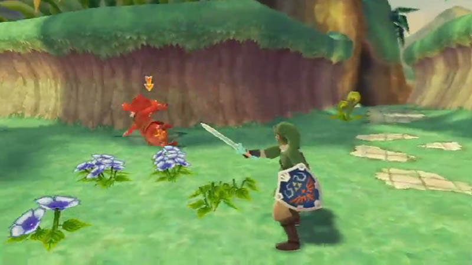
The Legend of Zelda: Minish Cap
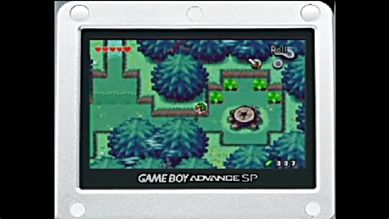
The Legend of Zelda: Ocarina of Time
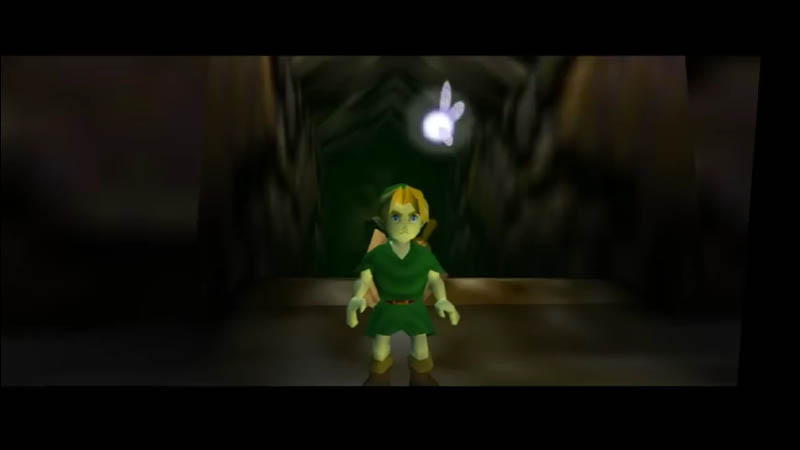
The Legend of Zelda: A Link to the Past
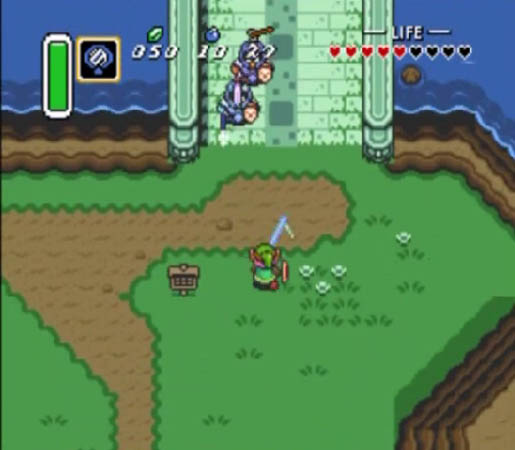
The Legend of Zelda: Link's Awakening
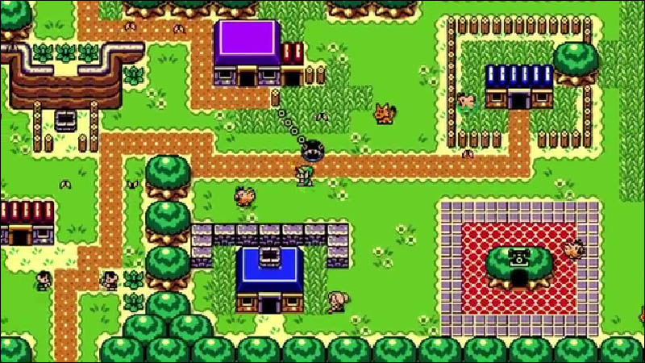
The Legend of Zelda: Oracle of Seasons
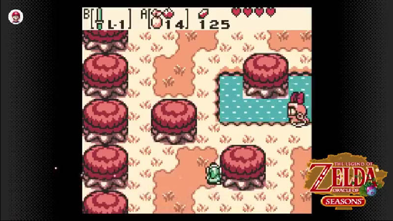
The Legend of Zelda: Oracle of Ages
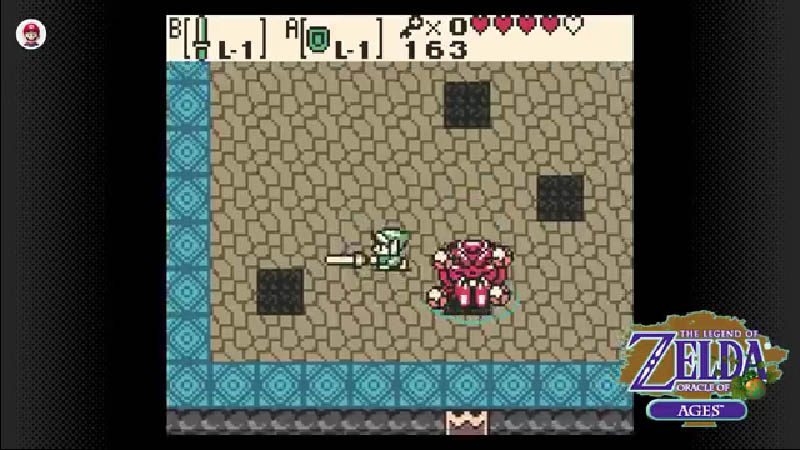
The Legend of Zelda: A Link Between Worlds
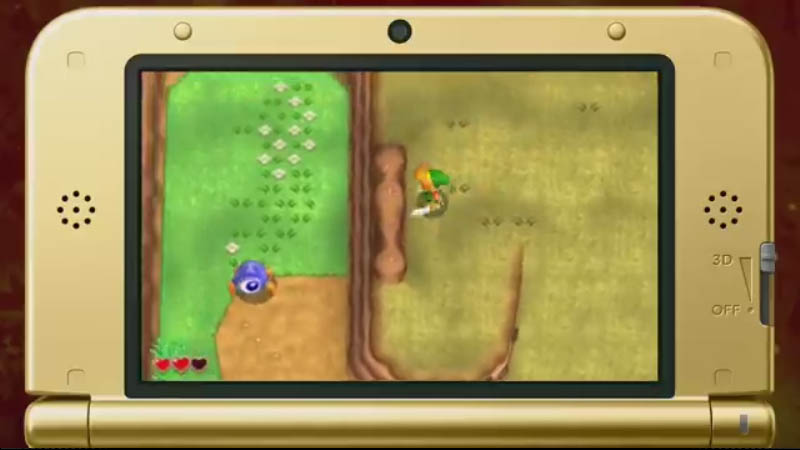
The Legend of Zelda: Tri Force Heroes
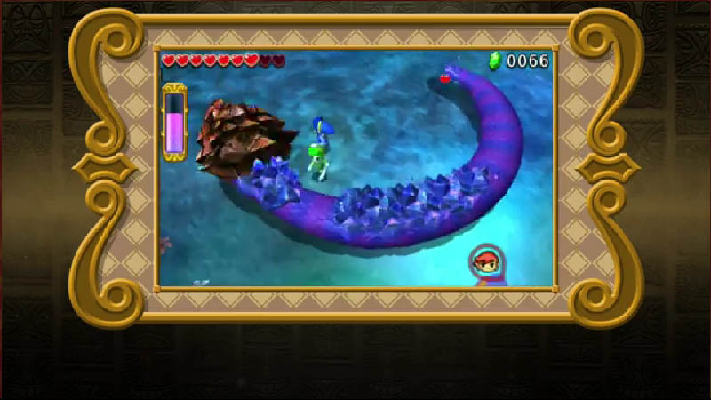
The Legend of Zelda
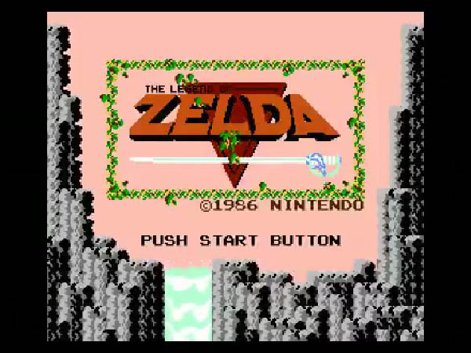
Zelda II: The Adventure of Link
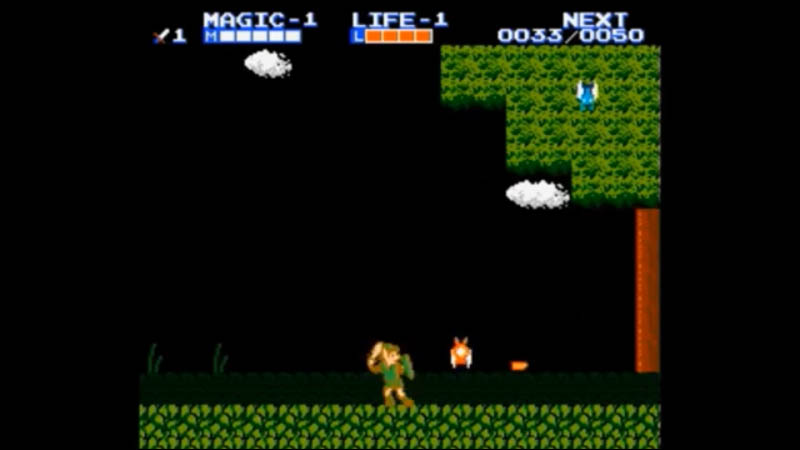
The Legend of Zelda: Majora's Mask
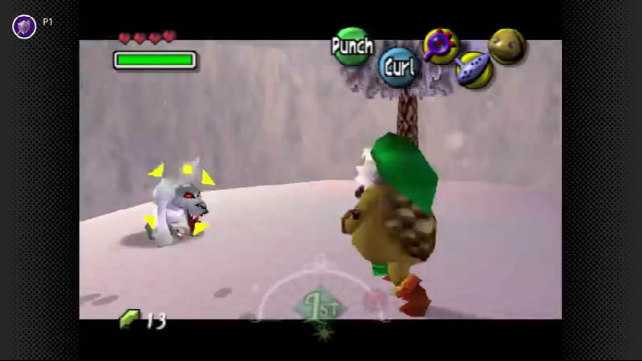
The Legend of Zelda: Twilight Princess
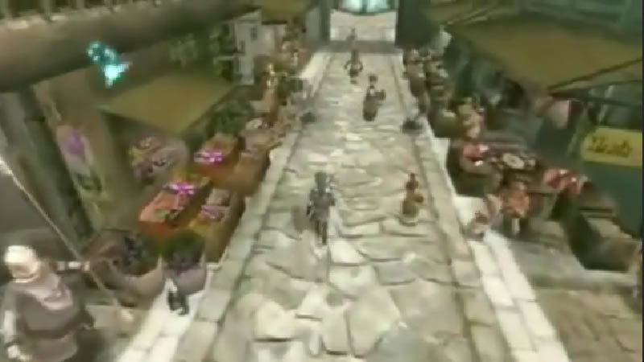
The Legend of Zelda: Four Swords Adventures
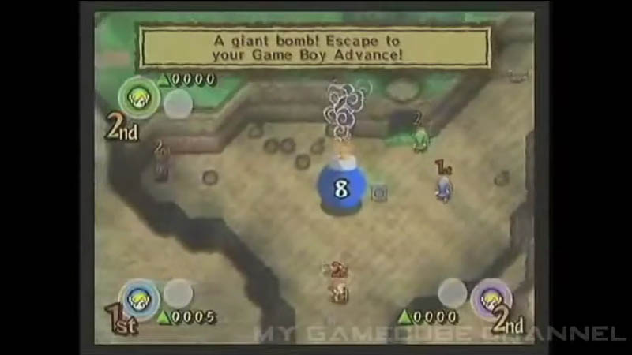
The Legend of Zelda: The Wind Waker
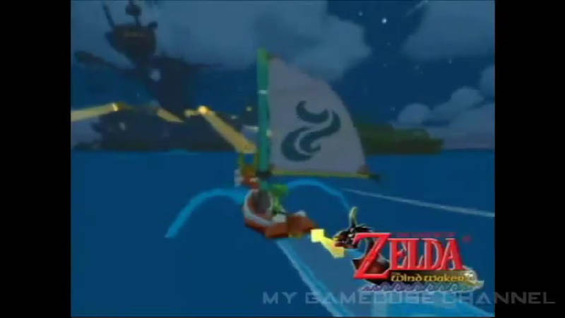
The Legend of Zelda: Phantom Hourglass
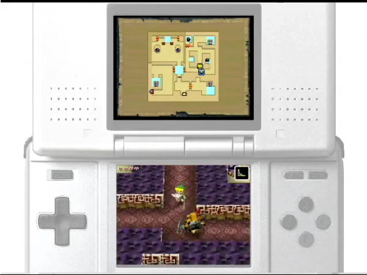
The Legend of Zelda: Spirit Tracks
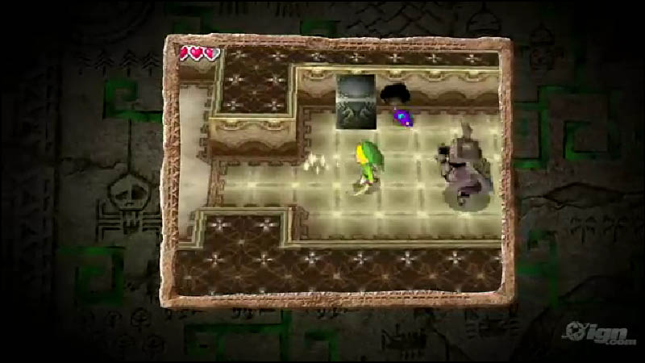
Primeras Eras
-
The Legend of Zelda: Skyward Sword
- La historia fundacional de la saga, donde Link forja la Espada Maestra. Su aventura establece el ciclo eterno entre Link, Zelda y Demise.
-
The Legend of Zelda: Minish Cap
- Link se une a Ezlo para derrotar a Vaati y salvar Hyrule. El juego explora la conexión entre los humanos y los diminutos Minish.
- Link enfrenta a Vaati en una aventura multijugador con sus copias. La historia introduce la Espada Cuádruple y el poder de la unión.
- Link viaja en el tiempo para detener a Ganondorf y salvar Hyrule. Este título marca el punto de división en tres líneas temporales.


The Legend of Zelda: Four Swords

The Legend of Zelda: Ocarina Of Time

Línea temporal del Fracaso del Héroe
-
The Legend of Zelda: A Link to the Past
- Link reúne la Trifuerza para derrotar a Ganon en un Hyrule oscuro. El juego es un clásico que definió la estructura de la saga.
-
The Legend of Zelda: Link's Awakening
- Link despierta al Pez Viento en la misteriosa isla Koholint. Una aventura onírica con un tono emocional único.
-
The Legend of Zelda: Oracle of Seasons
- Link restaura el equilibrio en Holodrum manipulando las estaciones. El juego combina acción y puzles con un sistema interconectado.
-
The Legend of Zelda: Oracle of Ages
- Link viaja en el tiempo para salvar Labrynna de la hechicera Veran. Complementa a Seasons con una narrativa entrelazada.
-
The Legend of Zelda: A Link Between Worlds
- Link alterna entre Hyrule y Lorule para detener a Yuga. Introduce mecánicas de transformación en pintura y libertad de exploración.
-
The Legend of Zelda: Tri Force Heroes
- Link colabora con otros héroes en Hytopia para salvar a una princesa. Un título multijugador con énfasis en la cooperación y disfraces.
-
The Legend of Zelda
- Link reúne fragmentos de la Trifuerza para derrotar a Ganon. El juego original que dio inicio a la legendaria saga.
-
The Legend of Zelda II: The Adventure of Link
- Link busca despertar a la Zelda durmiente y evitar el retorno de Ganon. Un título con elementos de RPG y combate lateral.


Línea temporal de Link Niño
-
The Legend of Zelda: Majora's Mask
- Link salva Termina de la caída de la Luna en tres días. Una aventura oscura con un enfoque en ciclos temporales.
-
The Legend of Zelda: Twilight Princess
- Link, transformado en lobo, libera Hyrule del reino del Crepúsculo. El juego destaca por su tono épico y narrativa madura.
-
The Legend of Zelda: Four Swords Adventures
- Link y sus copias enfrentan a Vaati y a un Ganon renacido. Una experiencia multijugador con un estilo visual vibrante.


Línea temporal de Link Adulto
-
The Legend of Zelda: Wind Waker
- Link navega un Hyrule inundado para detener a Ganondorf. Su estilo artístico cartoon y tono marítimo son icónicos.
-
The Legend of Zelda: Phantom Hourglass
- Link y Tetra buscan el Barco Fantasma en un océano vasto. Continúa la historia de Wind Waker con controles táctiles.
-
The Legend of Zelda: Spirit Tracks
- Link y Zelda restauran las vías sagradas en Nueva Hyrule. Un título que combina trenes y exploración con encanto.